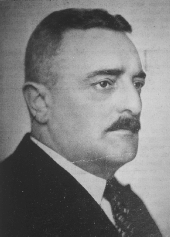
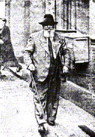
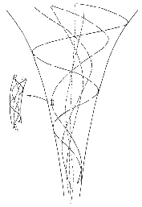
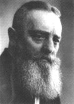

Who was Viktor Schauberger?
by Morten Ovesen, the Malmö group.

A brief biography could be like this: Viktor Schauberger was an Austrian forester who was active during the first half of the 19:th century. He had a huge beard and a friendly laughter, this he combined with an uncompromising belief in himself and his ideas. He was obstinate in combination with a choleric temper. He was a good drawer and probably a skilled craftsman. Even if Viktor was not schooled the academic way he had a deep knowledge in biology, physics and chemistry. His sense and understanding on how water flows in the nature was exceptional. From his observations he formulated his new hydrodynamic basic theory. His friends and opponents described him as highly intelligent and with this intellectual sharpness he made a deep cut in his (and ours) physical paradigm.
Viktor Schauberger made his first tentative efforts during his childhood. His highest wish was to follow in the footsteps of his forefathers and become a forester in the primeval-like forests that could be found in Austria in the end of the 18:th century. During his long walkabouts in the deep forest it was the water that first of all caught his attention. Small creeks and rivers were animated for him. The revolution of the water appeared as much more complex than the established knowledge explained. He meant that the water streams were the blood of the earth, and the smallest deviation in the temperature could be compared to the deviations seen in human blood. Fresh water makes it's own winding way in the nature and by doing this it builds up an internal movement that gathers more power than the man is able to measure.
He proved this internal power by designing long winding floating canals that were able to float huge timber logs using just a small amount of water. Along these canals, ingenious water exchange stations were placed. In these stations fresh cool water was refilled when the old "worn" water was tapped. To describe the internal movement of the water is not easy! To be able to do this Schauberger had to create a home made terminology. Terms as cycloid turbulence, inward flushing movement and dia-magnetism did not belong in academic seminars and he early fell on the wrong side of the scientific establishment. On the other hand, with spruce needles in his beard, eyes that burned of conviction and a spirit that categorically refused any contradiction he was surely not easy to handle.

Viktor Schauberger's basic thesis contains a universal, twofold movement principle. He meant that life sustains by a gathering, implosive type of movement and reversed, a spreading, explosive movement that leads to the extinguishing of life. With the implosive movement coolness, suction growth and healthiness follows. The explosive movement generates heat, pressure, fragmentation, illness, and death. His opinion was that man had only succeeded in mastering the movement of death in order to release energy. All known engines are based on explosion, heat and pressure. To only use the explosive movement, definitely leads to the destruction of nature. These thoughts did not get any sympathy in his time, decades before the environmental problems showed up.
Therefore, one of Schaubergers aims was to investigate and artificially copy this movement that he could see that the nature was using in order to gather energy for different uses. Basically the movement could be described as an inward moving and twisting vortex. The appearance of the vortex is wide. A spiral galaxy is an expression for a disc-shaped vortex whose opponent could be a DNA molecule, which describes a nearly infinite long thread-shaped vortex. The grade of complexity becomes obvious if You realize that large vortices are composed of smaller vortices and so on.

Imagine the vortex that lifts the stack of leafs, this vortex is a part of a larger system of vortices. Schauberger meant that when these vortex systems are co-ordinated and phase together, huge forces are released. These forces are capable of building or condensing biological systems and also rays of something that he named dia-magnetism. This dia-magnetism is opposed to gravitation and explains (among other phenomena) how it is possible for life-forms on the surface of the earth to grow up in the air.
Everywhere in the nature Schauberger could see shapes that sustain this, as he named it, multiple centripetal movement. The beds of creeks and rivers, the gills and fins on fishes, the wings of the birds, blood vessels and similar things, all these gives an impulse to this type of movement.
He tried to artificially generate the centripetal movement in various types of machines. Among other devices, he designed several prototypes of so called home power plants. These devices had conical, twisted tubes that were wrapped around a conical shaped body as a main component. When these tubes are forced to rotate, water is sucked into the tubes in the biggest end and after being processed in the tube it is sprayed out in a tremendous force on turbine vanes, mechanically connected to a generator. An other design, an implosion machine that sucked in air that was twisted so efficiently that the dia-magnetic field was able to lift the device with a tremendous force. However, the information on the function and efficiency of these devices is uncertain. What is known, is that Schauberger had both American and Soviet eyes directed on him. At the end of his life he was cheated, isolated and silenced by businessmen from the US. These businessmen feared that he could threat their business.

Viktor Schauberger died 1958, betrayed, side-stepped, and misunderstood 73 years old in Linz, Austria. Those of you who can feel the sucktion from the waste biographic hole that this rudimentary presentation brings, I recommend the book "Living water" by Mr Olof Alexandersson.
- Here you can order the book "Living water" from the web
- Introduction to Living water and some anecdotes from Viktors life
- Research about Viktor Schauberger at the Institute of Ecological Technology
- An introduction to research on water related to Viktor Schauberger at Water Calendar
Another book being on a slighly higher level, is Callum Coats book: Living energies.
I strongly recommend this book if You have started with Living Water.